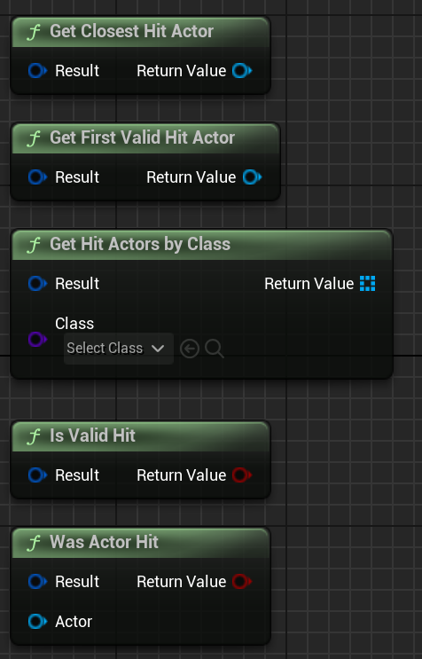

üõ†Ô∏è Usage Guide
This page explains how to use:
SmartConeTrace— the automatic scene componentConeTraceByChannel()— the manual Blueprint function- All result fields and helper functions
No C++ required — everything is Blueprint-ready.
üß± Using the Component
Add the SmartConeTrace component to any actor.
It will automatically perform a cone trace every few seconds and call the event OnConeTraceResult.

Actor Blueprint using the SmartConeTrace component with the OnConeTraceResult event.
üîß Component Parameters
All settings can be adjusted in the Details panel.
| Property | Description |
|---|---|
Interval |
How often to perform the trace (in seconds). Set to 0 to disable automatic tracing. |
Length |
How far the cone reaches. |
AngleDegrees |
Width of the cone in degrees (spread). |
TraceChannel |
What object types to trace (e.g. Visibility, Pawn). |
ActorsToIgnore |
Optional list of actors to skip during trace. |
RequiredClass |
Only include hits with this actor class (or child classes). |
RequiredTags |
Only include actors that have any of these tags. |
RequiredInterface |
Only include actors that implement this Blueprint interface. |
bMultiHit |
If true, collect all valid hits. If false, only use the closest hit per step. |
bIgnoreSelf |
Skip tracing against the owner actor. Usually true. |
DebugMode |
Draw the cone in the world (lines, boxes, hit points). Options: None, Basic, Full. |
DebugDuration |
How long to keep the debug visuals on screen (in seconds). |
StepSize |
Distance between each box trace. Smaller = smoother cone. |
BoxDepth |
Length of each individual box trace. |
ToleranceDegrees |
Extra angle margin to accept hits slightly outside the cone. |
bUseComponentTransform |
If true, the trace starts from the component's position and direction. If false, uses the actor’s transform. |
bCheckVisibility |
If true, performs line-of-sight checks on hit actors to ensure they aren't behind walls. |
VisibilityOriginMode |
Where visibility traces start (ScreenPoints, ScreenCenter, or ConeStart). |

Details panel showing all parameters of the SmartConeTrace component.
üëÅÔ∏è Visibility & Line of Sight
By default, a cone trace will hit actors even if they are behind walls (because it checks for shape overlap). To prevent this, enable bCheckVisibility.
When enabled, the plugin performs secondary line traces against every actor found in the cone:
- Origin: Traces start from the Camera (if set to
ScreenPoints) or the Cone Origin (if set toConeStart). - Target: Traces end at the target actor's center and 8 corners of its bounding box.
- Result: If any trace reaches the target without being blocked by the
VisibilityChannel, the actor is added to theVisibleActorslist.
Usage Tips:
- AI Vision: Set VisibilityOriginMode to ConeStart so the AI checks visibility from its own eyes/sensor.
- Player Vision: Set to ScreenPoints to ensure the player can actually see the object on screen.
- VisibilityBoundsScale: Reduce this (e.g., 0.8) if you want to require more of the object to be visible to count as a "hit".
ℹ️ About ActorsToIgnore
The ActorsToIgnore array lets you exclude specific actors from being hit by the cone trace.
⚠️ Important: This array can only be filled with actors that are already placed in the scene.
If you're using the component or calling the ConeTraceByChannel() function in Blueprint:
- You must select scene-placed actors (e.g. from the World Outliner).
- You cannot add dynamically spawned actors or class references directly.
- The actor that owns the trace component or the Blueprint node must also be in the level — otherwise, the editor won't let you assign values to
ActorsToIgnore.
This is a limitation of how the Unreal Editor handles TArray<AActor*> in exposed Blueprint properties.
To ignore the owner actor automatically, simply enable bIgnoreSelf.
⚙️ Advanced Settings Tips
- StepSize — Smaller values result in a smoother and more precise cone, but increase the number of traces and cost.
- BoxDepth — Increase if some actors are being missed between trace steps.
- ToleranceDegrees — Add a small margin (1–5°) to catch actors that appear visually inside the cone but technically fall just outside.
üìò Result Event: OnConeTraceResult
This event is triggered after each trace (if interval > 0). It gives you a SmartConeTraceResult struct.
üì¶ SmartConeTraceResult Fields
| Field | Type | Description |
|---|---|---|
bDidHit |
bool |
true if anything was hit. |
Hits |
Array<HitResult> |
All filtered hits. |
HitActors |
Array<Actor> |
All valid actors that were hit. |
ClosestHit |
HitResult |
The closest valid hit among all steps. |
VisibleActors |
Array<Actor> |
Subset of HitActors that passed the line-of-sight check (requires bCheckVisibility). |

Example of printing the name of the closest hit actor using the result.
⚙️ Using the Blueprint Function
If you want to trace manually, use ConeTraceByChannel() from SmartConeTraceLib.
It’s perfect for:
- One-time checks (e.g. on key press)
- Tracing from any point and direction
- Custom cone logic

Calling the ConeTraceByChannel function with Start, Direction, and other parameters.
üî¨ Debug Modes
| Debug Mode | Description |
|---|---|
None |
No visuals |
Basic |
Lines + hit points |
Full |
Boxes, lines, hit points (most detailed) |

In-game view showing a fully visualized cone and hit points in Full debug mode.
ü߆ Helper Functions
You can use these helper functions from SmartConeTraceLib to work with the result:
| Function | What it does |
|---|---|
GetClosestHitActor(Result) |
Returns the actor from Result.ClosestHit, or null. |
WasActorHit(Result, Actor) |
Returns true if the given actor is in the hit list. |
GetFirstValidHitActor(Result) |
Returns the first actor from the HitActors array. |
GetHitActorsByClass(Result, Class) |
Filters hit actors by class. |
IsValidHit(Result) |
Returns true if Result.bDidHit is true. |
GetVisibleActors(Result) |
Returns array of actors visible via line-of-sight. |
IsActorVisible(Result, Actor) |
Returns true if the actor passed the visibility check. |

Helper functions available in Blueprint for working with Smart Cone Trace results.
{kind=link}